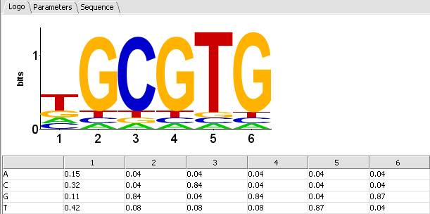
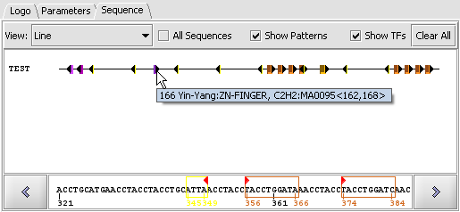
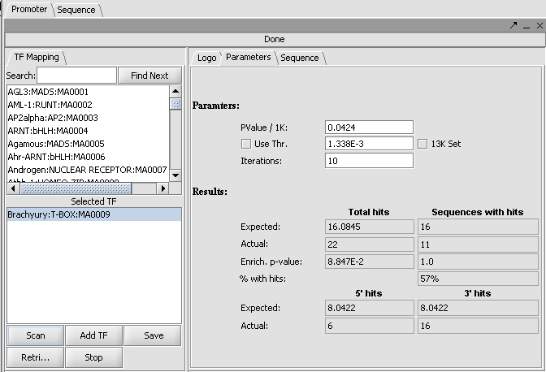

The Promoter Panel is located in the View Area (upper right) of the application. The promoter panel can used to visualize transcription factor binding sites (TFBS) using Transcription Factor signature analysis: Searching putative regulatory sequences against a collection of known transcription factor DNA-binding signatures represented as a position weight matrices (PWMs) [Lawrence and Reilly, 1990]. This visualization panel uses the JASPAR Transcription Factor Binding Profile Database (http://jaspar.cgb.ki.se/cgi-bin/jaspar_db.pl ).
This help section describes the promoter panel basic usage, transcription factor analysis and viewing results from the Pattern Discovery analysis component.
The following describes the basic usage of the Promoter Panel:
o Logo Tab: Select a TF in either list and the Logo tab displays a Position Specific Scoring Matrix (PSSM), a sequence logo representation of the TF signature.
o Parameters: Captures parameters and results for the Promoter Panel.
o Sequence Tab: The lines in the display area represent each sequence. Double click on the sequences to see the textual representation of the DNA and the TF signature match, shown as a colored rectangle.

1. Load a DNA Sequence FASTA File.
2. Select Promoter in the Visualization Area. The display area is updated to reflect the sequences for the FASTA file loaded.
3. Click on TF signatures in the TF list to the Selected TF list.
4. Click on Scan, the Selected TF's are searched against the available genomic sequences. The patterns will be mapped onto the sequences according to match criteria in the Parameter Tab.
Note: Each time that a transcription factor (TF) matching operation is run, the "active TFs" data structure is *AUGMENTED* with the results of the discovery operation (i.e., contents due to previous runs are maintained). The "active TFs" is not affected by pattern discovery.
5. Click on Show TF. If matches are found, the sequence will include blocks in various colors with solid arrows indicating its orientation (negative or positive). Individual hits can be identified by positioning the mouse pointer over them, which will display the tool tip. Double click on a match and the Sequence Detail at the bottom of the pane displays character strings of the selected.

The tooltip format is as follows: numeric position, Transcription Factor name (numeric position of the first character of the pattern, numeric position of last matching pattern character).

1. Load a FASTA File into the project pane.
2. Run Pattern Discovery analysis. (See Pattern Discovery online help for more information)
3. In the Pattern Discovery Panel, left click on the row(s) to display selected motifs and their frequencies in the dataset. The Promoter Panel, Sequence Panel, and Patterns are updated to display the patterns selected.
Note: Each time that a Pattern Discovery analysis is run, the contents of the "active patterns" structure are REPLACED with the results of the discovery operation (i.e., contents due to previous runs are cleared).